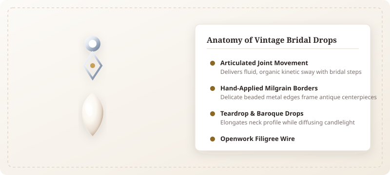
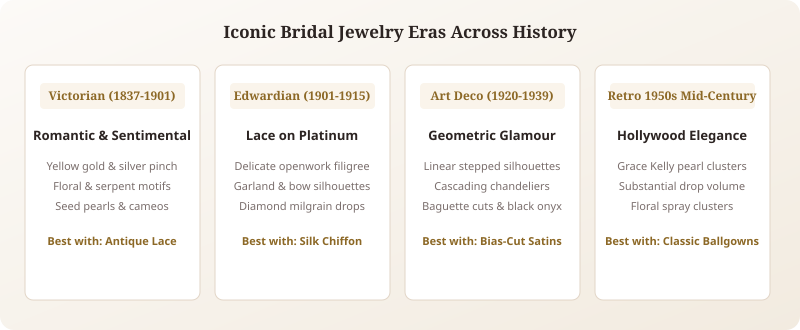
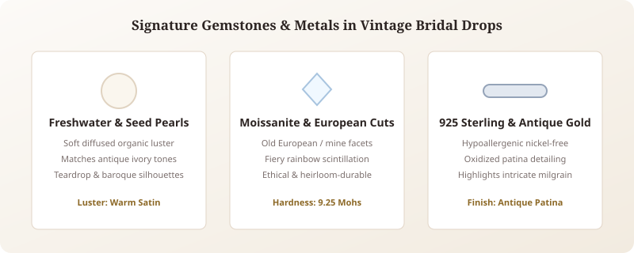
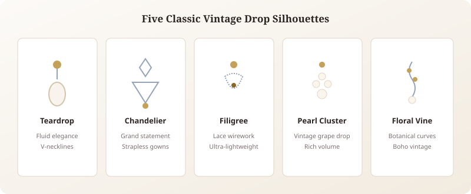
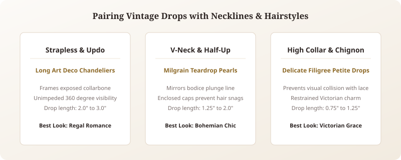
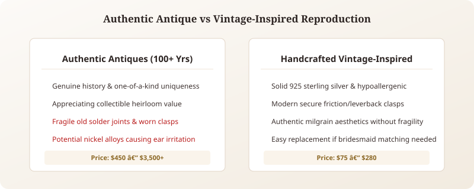
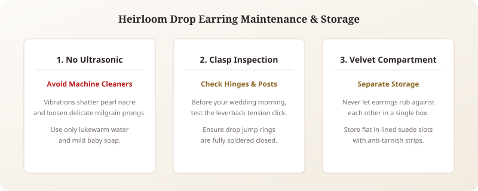

When curating your wedding ensemble, few accessories hold the emotional resonance and romantic charm of vintage bridal drop earrings. There is an unmistakable magic in jewelry that feels kissed by another era, carrying the quiet nobility of romantic eras past while framing your radiant smile as you exchange your vows.
Unlike mass-produced modern jewelry, vintage-inspired drop earrings evoke deep narrative, exquisite craftsmanship, and nostalgic intimacy. From delicate Victorian-style bridal jewelry celebrating floral lace to bold geometric art deco bridal earrings, a thoughtfully chosen pair of antique wedding earrings elevates your bridal presence from simply beautiful to utterly breathtaking. In this comprehensive guide, we explore the history, materials, face shape harmonies, and styling secrets that will guide you to your forever heirloom.
1. What Makes Earrings "Vintage" in Bridal Style

In the vocabulary of fine bridal jewelry, the word "vintage" describes designs that either originate from or faithfully reproduce the bench techniques of eras at least fifty to one hundred years old. Unlike modern minimalist jewelry defined by machine-stamped geometric planes, vintage bridal drops celebrate the painstaking touch of the artisan silversmith.
True vintage aesthetics are defined by three distinct technical signatures:
- Hand-Applied Milgrain: Originating from the French phrase mille-grains ("a thousand grains"), milgrain consists of tiny, beaded metal rows rolled along the borders of settings. This delicate texturing softens metal edges and produces a romantic candlelit halo.
- Openwork Filigree: Gossamer metal threads twisted, curled, and soldered into intricate lacelike patterns. Filigree creates airiness, allowing light to illuminate stones from all directions.
- Articulated Movement: Vintage drops feature multi-tiered suspension joints that allow the teardrop centerpiece to swing freely. This kinetic fluidity catches light with every joyful turn of your head.
The Vintage Hallmark Checklist
- Kinetic Sway: Articulated jump rings allow graceful swing during your walk down the aisle.
- Soft Patina: Gentle oxidation in metal crevices creates depth and antique character.
- Intricate Detailing: Hand-engraved scrolls, floral leaf cups, and beaded borders.
2. Popular Vintage Eras: Finding Your Bridal Aesthetic

Bridal fashion draws inspiration from distinctive historical design movements. Identifying which era resonates with your wedding theme helps create seamless harmony between your gown, venue, and accessories:
Victorian Era (1837–1901): Sentimental Romance
Heavily influenced by Queen Victoria’s deep love for nature and Prince Albert, Victorian-style bridal jewelry is steeped in emotional symbolism. Signature elements include trailing ivy leaves representing fidelity, forget-me-nots, snake motifs symbolizing eternity, and seed pearl clusters. Victorian drop earrings often pair warm yellow gold or darkened silver with creamy cabochons, making them magnificent accompaniments for romantic bohemian gowns and lace dresses.
Edwardian Era (1901–1915): Platinum & Lace
The Edwardian period brought unprecedented lightness and luxury to fine jewelry. Jewelers mastered platinum work, creating featherlight "garland style" drops that echoed gossamer silk tulle and Brussels lace. Featuring bows, laurel wreaths, and scrolling ribbons set with shimmering old-cut gems, Edwardian drop earrings suit ethereal silk chiffon ballgowns and regal outdoor garden weddings.
Art Deco Era (1920–1939): Architectural Glamour
For the bride who embraces bold sophistication, art deco bridal earrings deliver unforgettable dramatic power. Emerging during the Roaring Twenties, Art Deco celebrated clean symmetry, geometric stepped chevrons, faceted baguettes, and striking black onyx contrasts. Art Deco chandeliers frame high-neck sheaths, cowl-back silk slips, and glamorous city hall celebrations with peerless metropolitan flair.
Retro 1950s Mid-Century: Classic Hollywood Radiance
The post-war 1950s embraced timeless Hollywood glamour, popularized by icons like Grace Kelly and Audrey Hepburn. Fifties bridal drops focus on substantial, lustrous pearl cluster drops suspended from diamond-encrusted floral ear posts. If your wedding aesthetic features a classic satin ballgown or a chic tea-length dress, mid-century drops bring unforgettable royalty.
3. Best Materials and Gemstones in Antique Wedding Earrings

The materials in antique and vintage earrings determine both their aesthetic warmth and everyday wearability:
| Material / Gemstone | Vintage Character | Luster & Hardness | Ideal Dress Undertone |
|---|---|---|---|
| Lustrous Cultured Pearls | Classic Victorian & 1950s Hollywood | Soft satin glow (2.5–4.0 Mohs) | Ivory, cream, warm champagne |
| Old European Cut Moissanite | Edwardian & Art Deco fire | Brilliant fiery dispersion (9.25 Mohs) | Pure white, silver, blush |
| 925 Sterling Silver | Handcrafted filigree with antique patina | Mirror sheen with oxidized depth | Crisp white, diamond white silk |
| 14K/18K Antique Yellow Gold | Warm heirloom radiance | Rich buttery glow, durable | Champagne, warm lace, ecru |
| Rose Gold | Romantic Victorian blush warmth | High copper durability | Blush, petal pink, soft peach tulle |
When selecting pearl drop earrings for bride wear, teardrop and baroque freshwater pearls provide organic, candlelit warmth that mirrors the movement of bridal silk. For brides who crave diamond-like scintillation without historical fragility, Old European-cut moissanite delivers broad antique facets that sparkle enchantingly in dim reception lighting. Explore handcrafted sterling silver earrings for nickel-free comfort and authentic artisan filigree.
4. Five Iconic Styles of Vintage Drop Earrings

Vintage bridal drops come in five distinctive silhouettes, each suited to different bridal gown architectures:
- The Classical Teardrop: A single luminous baroque pearl or faceted gem suspended from a petite filigree post. Its uninterrupted downward contour gently elongates the jawline and collarbone.
- The Multi-Tiered Chandelier: Cascading tiers of articulated metalwork and shimmering drops that sway with dramatic grace. Ideal for strapless gowns where broad shoulder space welcomes bold ornamentation.
- Delicate Lace Filigree: Weightless openwork frames that resemble heirloom lace, perfect for brides who desire visual complexity without uncomfortable earlobe pulling.
- The Grape Pearl Cluster: Multiple graduating seed pearls clustered organically like sweet grapes, evoking authentic Victorian and Mid-Century majesty.
- The Botanical Floral Vine: Trailing branches adorned with silver leaves and buds, creating romantic bohemian harmony for outdoor garden nuptials.
5. Matching Vintage Drop Earrings with Necklines and Hairstyles

Achieving flawless bridal styling requires balancing negative space around your neck and shoulders:
Strapless and Sweetheart Necklines: These cuts provide expansive open canvas. Complement this negative space with dramatic 2.0 to 3.0 inch Art Deco chandeliers. If you choose statement earrings, consider skipping a necklace entirely to let your earrings and collarbone serve as the focal point.
Plunging V-Necks and Halter Gowns: Deep V-cuts guide the eye downward. Teardrop drop earrings with linear drops between 1.25 and 1.75 inches mirror this plunge line with breathtaking grace. For high halter necks, opt for petite filigree drops under 1 inch to avoid visual crowding near the fabric collar.
Hairstyle Integration: If you wear a sleek chignon or high ballerina bun, your earrings enjoy complete visibility; opt for intricate chandeliers or multi-stone drops. If wearing romantic loose waves, select smooth teardrops with enclosed bezel settings and secure leverbacks to prevent open prongs from catching in loose curls during reception breezes.
6. Choosing Vintage Drop Earrings by Face Shape

Drop earrings possess an extraordinary ability to visually rebalance facial contours:
- Round Face: Choose narrow, elongated linear Art Deco drops. The vertical drop draws the eye downward, creating a slimming, sculpted contour along the cheeks. Avoid circular buttons or wide disc shapes.
- Oval Face: Oval profiles possess balanced natural symmetry and can wear almost any vintage silhouette effortlessly, from bold wide chandeliers to delicate teardrop dangles.
- Square or Angular Jawline: Soften sharp angles with fluid, curved teardrop silhouettes or soft floral vine drops. Flowing curves diffuse angular jawline edges beautifully.
- Heart-Shaped Face: Wide foreheads paired with tapered chins are flattered by bottom-heavy chandeliers or flared teardrops that create width along the lower jawline.
7. Authentic Antiques vs. Vintage-Inspired Reproductions

Brides often deliberate between sourcing a 100-year-old antique and choosing a handcrafted vintage-inspired design:
Authentic Antique Jewelry: True antique earrings carry authentic historic romance. However, historical pieces often feature fragile aged solder joints, brittle clasps, and mystery base metals that may provoke earlobe allergies during an 8-hour celebration. Sourcing matching sets for bridesmaids can also prove virtually impossible.
Handcrafted Vintage-Inspired Designs: Modern artisan recreations capture the exact aesthetic magic of Victorian and Art Deco eras while utilizing hypoallergenic 925 sterling silver, modern laser precision, and ultra-secure leverback clasps. They offer pristine durability, accessible price points (\$65 to \$250), and the joyful opportunity to start your own true heirloom lineage.
8. Heirloom Care and Storage Tips for Wedding Drop Earrings

Preserving delicate milgrain detailing and natural pearl drops requires gentle mindfulness:
- Avoid Ultrasonic Cleaners: High-frequency ultrasonic vibrations can shatter delicate pearl nacre and shake loose fine antique pavé stones. Clean vintage drops using only warm water, gentle baby soap, and a soft camel-hair brush. For complete precious metal care tips, reference sterling silver jewelry care guidelines.
- Pre-Ceremony Clasp Check: A few days before the ceremony, inspect your earring clasps. Ensure leverbacks click with firm tension and that jump rings connecting drops are soldered securely shut.
- Individual Compartment Storage: Always store your drop earrings flat in individual velvet-lined compartments. Allowing filigree drops to rub against diamond rings can permanently scratch soft silver and dull pearl luster.
Conclusion: Finding Your Forever Heirloom
Your wedding day is an extraordinary celebration of everlasting love. Choosing the right vintage bridal drop earrings is far more than matching your dress; it is an intimate expression of timeless grace that frames your joy in every treasured wedding portrait.
Whether you fall in love with the architectural majesty of Art Deco chandeliers or the poetic tenderness of Victorian pearl teardrops, choose earrings that make your spirit feel radiant and timeless. Complete your bridal aesthetic with coordinating bridal silver necklaces or explore botanical earrings to find your dream wedding pair.
Frequently Asked Questions
Can I wear vintage drop earrings with a modern minimalist wedding gown?
Yes! In fact, vintage drop earrings create a breathtaking textural contrast against clean, unembellished fabrics like crepe, satin, or silk faille. A pair of Art Deco chandeliers or teardrop drops serves as the captivating centerpiece of an otherwise sleek look.
Are heavy vintage chandelier earrings comfortable for all-day wedding wear?
Traditional solid-metal antique chandeliers can be weighty, but handcrafted filigree drop earrings in 925 sterling silver are remarkably lightweight due to their openwork construction. Look for wide disc backs or secure leverback clasps to distribute weight evenly and prevent ear fatigue.
Should my bridesmaids wear matching vintage drop earrings?
While bridesmaids do not need identical earrings, selecting coordinating vintage-inspired drops creates romantic visual harmony in bridal party photos. For example, the bride might wear multi-tier pearl chandeliers while bridesmaids wear petite filigree teardrops in matching silver tones.
How do I know if vintage-style earrings will irritate sensitive ears?
Always verify that the ear posts and wires are crafted from genuine nickel-free 925 sterling silver, 14K gold, or platinum. Avoid mystery base metals often found in unregulated costume jewelry, as nickel is the primary culprit behind allergic reactions and earlobe redness.